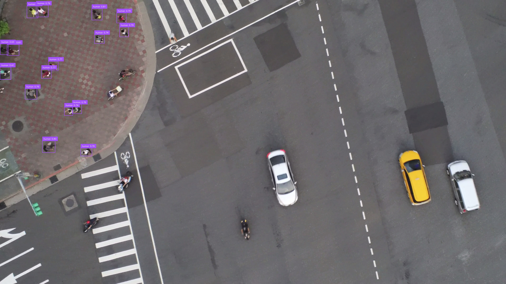

| Field | Value |
|---|---|
| Document Title | Human Detection Dataset & Real-Time Tracking Pipeline |
| Document ID | DOC-HDD-2026-v1.0 |
| Version | 1.0 |
| Status | Released |
| Author | Vision AI Engineering Team |
| Organization | Aerial Systems & Autonomous Robotics Lab |
| Release Date | August 26, 2026 |
| Version | Date | Author(s) | Changes |
|---|---|---|---|
| 1.0 | 2026-08-26 | Vision AI Group | Initial release of dataset conversion, RF-DETR fine-tuning, and interactive target lock demo. |
Real-time human detection and tracking from aerial drone platforms present unique computer vision challenges, including low pixel resolution, extreme perspective distortion, scale variation, and motion blur caused by drone vibrations and gimbal movement.
This document presents the complete engineering specification for the Human Detection & Tracking Pipeline. Key system capabilities include:
class_id = 0).The system consists of five decoupled stages: Data Ingestion, Format Conversion, Dataset Partitioning, Transformer Model Fine-Tuning, and Live GCS Inference/Tracking.
| Component Script | Functional Description |
|---|---|
convert_to_yolo.py | Parses VoTT CSV annotations, extracts bounding boxes, normalizes coordinates to [0, 1], creates yolo_dataset/dataset.yaml. |
reorganize_dataset.py | Structures image/label splits into rfdetr_dataset format with train/valid splits and data.yaml. |
train.py | Fine-tunes RT-DETR Large (rtdetr-l.pt) using Ultralytics engine (100 epochs, 640 imgsz). |
rfdetr_train.py | Fine-tunes RFDETRMedium transformer with 4-step gradient accumulation (lr = 1e-4). |
eval_confusion_matrix.py | Benchmarks validation predictions using Supervision library (conf=0.3, IoU=0.5). |
demo.py | Real-time video/webcam feed demo with OpenCV, DeepSORT tracking, and mouse target locking. |
Launcher.bat | Windows batch menu utility for unified pipeline execution. |
Bounding box coordinates (xmin, ymin, xmax, ymax) are transformed into normalized center offsets (xc, yc, w, h):
xc = (xmin + xmax) / (2 * Width) yc = (ymin + ymax) / (2 * Height) w = (xmax - xmin) / Width h = (ymax - ymin) / Height
